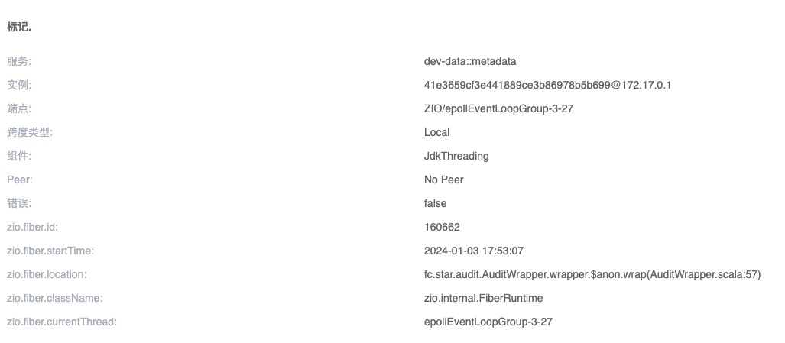
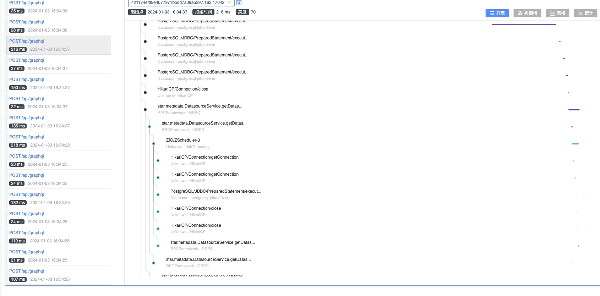

SkyWalking 如何支持 ZIO 等 Scala Effect Runtime
背景介绍
在 Scala 中，纯函数式中主要使用 Fiber，而不是线程，诸如 Cats-Effect、ZIO 等 Effect 框架。 您可以将 Fiber 视为轻量级线程，它是一种并发模型，由框架本身掌控控制权，从而消除了上下文切换的开销。 基于这些 Effect 框架开发的 HTTP、gRCP、GraphQL 库而开发的应用，我们一般称为 纯函数式应用程序。
我们以 ZIO 为切入点， 演示 SkyWalking Scala 如何支持 Effect 生态。
ZIO Trace
首先，我们想要实现 Fiber 上下文传递，而不是监控 Fiber 本身。对于一个大型应用来说，可能存在成千上万个 Fiber，监控 Fiber 本身的意义不大。
虽然 Fiber 的 Span 是在活跃时才会创建，但难免会有目前遗漏的场景，所以提供了一个配置 plugin.ziov2.ignore_fiber_regexes。
它将使用正则去匹配 Fiber location，匹配上的 Fiber 将不会创建 Span。
Fiber Span的信息如下：

下面是我们使用本 ZIO 插件，和一些官方插件（hikaricp、jdbc、pulsar）完成的 Trace：

分析
在 ZIO 中，Fiber可以有两种方式被调度，它们都是 zio.Executor 的子类。当然您也可以使用自己的线程池，这样也需被 ZIO 包装，其实就类似下面的 blockingExecutor。
abstract class Executor extends ExecutorPlatformSpecific {
self =>
def submit(runnable: Runnable)(implicit unsafe: Unsafe): Boolean
}
一种是系统默认线程池 defaultExecutor：
private[zio] trait RuntimePlatformSpecific {
final val defaultExecutor: Executor =
Executor.makeDefault()
}
另一种是专用于阻塞 IO 的线程池 blockingExecutor：
private[zio] trait RuntimePlatformSpecific {
final val defaultBlockingExecutor: Executor =
Blocking.blockingExecutor
}
默认线程池 defaultExecutor
对于 defaultExecutor，其本身是很复杂的，但它就是一个 ZIO 的 Fiber 调度（执行）器：
/**
* A `ZScheduler` is an `Executor` that is optimized for running ZIO
* applications. Inspired by "Making the Tokio Scheduler 10X Faster" by Carl
* Lerche. [[https://tokio.rs/blog/2019-10-scheduler]]
*/
private final class ZScheduler extends Executor
由于它们都是 zio.Executor 的子类，我们只需要对其及其子类进行增强：
final val ENHANCE_CLASS = LogicalMatchOperation.or(
HierarchyMatch.byHierarchyMatch("zio.Executor"),
MultiClassNameMatch.byMultiClassMatch("zio.Executor")
)
它们都是线程池，我们只需要在 zio.Executor 的 submit 方法上进行类似 ThreadPoolExecutor 上下文捕获的操作，可以参考 jdk-threadpool-plugin
这里需要注意，因为 Fiber 也是一种 Runnable：
private[zio] trait FiberRunnable extends Runnable {
def location: Trace
def run(depth: Int): Unit
}
阻塞线程池 blockingExecutor
对于 blockingExecutor，其实它只是对 Java 线程池进行了一个包装：
object Blocking {
val blockingExecutor: zio.Executor =
zio.Executor.fromThreadPoolExecutor {
val corePoolSize = 0
val maxPoolSize = Int.MaxValue
val keepAliveTime = 60000L
val timeUnit = TimeUnit.MILLISECONDS
val workQueue = new SynchronousQueue[Runnable]()
val threadFactory = new NamedThreadFactory("zio-default-blocking", true)
val threadPool = new ThreadPoolExecutor(
corePoolSize,
maxPoolSize,
keepAliveTime,
timeUnit,
workQueue,
threadFactory
)
threadPool
}
}
由于其本身是对 ThreadPoolExecutor 的封装，所以，当我们已经实现了 zio.Executor 的增强后，只需要使用官方 jdk-threadpool-plugin 插件即可。
这里我们还想要对代码进行定制修改和复用，所以重新使用 Scala 实现了一个 executors-plugin 插件。
串连 Fiber 上下文
最后，上面谈到过，Fiber 也是一种 Runnable，因此还需要对 zio.internal.FiberRunnable 进行增强。大致分为两点，其实与 jdk-threading-plugin 是一样的。
- 每次创建
zio.internal.FiberRunnable实例时，都需要保存 现场，即构造函数增强。 - 每次运行时创建一个过渡的 Span，将当前线程上下文与之前保存在构造函数中的上下文进行关联。Fiber 可能被不同线程执行，所以这是必须的。
说明
当我们完成了对 ZIO Fiber 的上下文传播处理后，任意基于 ZIO 的应用层框架都可以按照普通的 Java 插件思路去开发。 我们只需要找到一个全局切入点，这个切入点应该是每个请求都会调用的方法，然后对这个方法进行增强。
要想激活插件，只需要在 Release Notes 下载插件，放到您的 skywalking-agent/plugins 目录，重新启动服务即可。
如果您的项目使用 sbt assembly 打包，您可以参考这个 示例。该项目使用了下列技术栈：
libraryDependencies ++= Seq(
"io.d11" %% "zhttp" % zioHttp2Version,
"dev.zio" %% "zio" % zioVersion,
"io.grpc" % "grpc-netty" % "1.50.1",
"com.thesamet.scalapb" %% "scalapb-runtime-grpc" % scalapb.compiler.Version.scalapbVersion
) ++ Seq(
"dev.profunktor" %% "redis4cats-effects" % "1.3.0",
"dev.profunktor" %% "redis4cats-log4cats" % "1.3.0",
"dev.profunktor" %% "redis4cats-streams" % "1.3.0",
"org.typelevel" %% "log4cats-slf4j" % "2.5.0",
"dev.zio" %% "zio-interop-cats" % "23.0.03",
"ch.qos.logback" % "logback-classic" % "1.2.11",
"dev.zio" %% "zio-cache" % zioCacheVersion
)